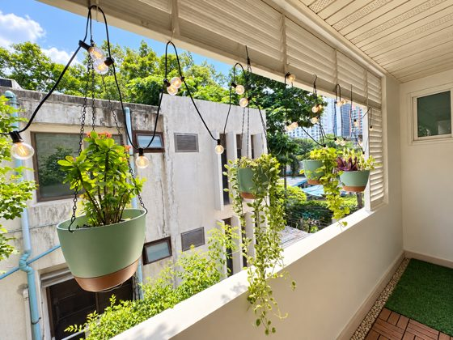
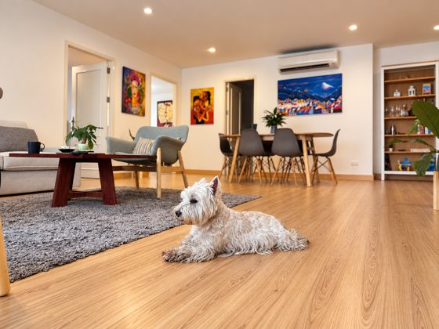
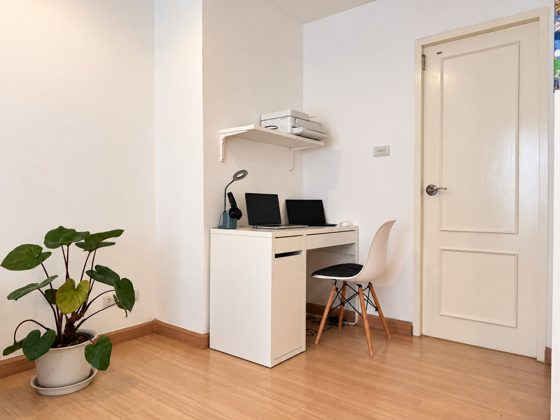
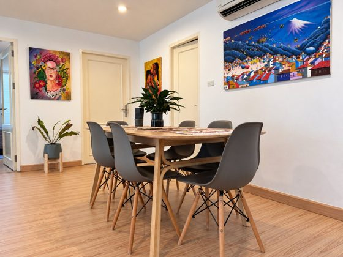
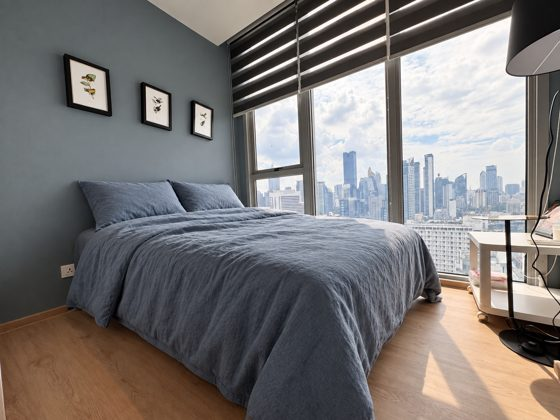

Curator's note
Not every beautiful home is a collection piece.
The ones here have a quality you notice before you can name it.
A considered collection of Bangkok homes, chosen for the way they feel to live in—not just the way they look on paper.
A short guide to what is inside: collections to browse, a cover home to look at closely, and notes on the city around them.
chosen for light, privacy and a slower pace.

Where the pet-friendly claim can be seen in the photographs.

A real second room set up as an office, not a laptop corner.

Fifteen frames and the story of how this two-bedroom lives.

Neighbourhood notes and the softer side of the city.


The ones here have a quality you notice before you can name it.
Rare light, hard-to-find layouts and rooms that stay with you.
Places to walk, rooms with a view and stories from the softer side of Bangkok—after the rain has washed the day away.
Enter the journal ↗Selected homes receive photography, film and an editorial presentation built to help the right people discover them.
This part of the prototype is not built yet.